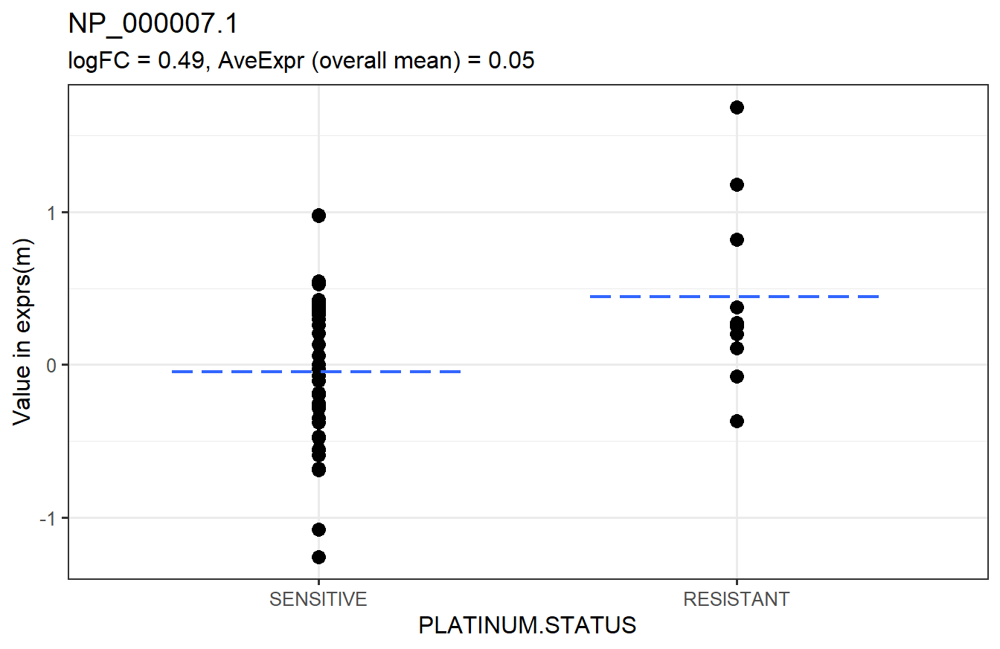
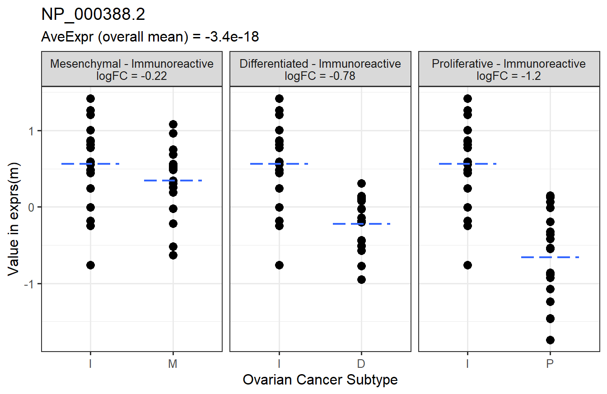

6.3 Two-Sample t-tests
Two-sample t-tests are used to determine whether there is a significant difference between the means of two groups. The null hypothesis is that the group means are equal, and the alternative is that they are not equal. Written another way, the null hypothesis is that the difference in means is zero, and the alternative is that the difference is not zero.
limma_a_b and limma_contrasts can perform moderated two-sample t-tests.
6.3.1 One comparison
If a factor only has two groups, we can use limma_a_b. We will test for differences between the “RESISTANT” and “TREATMENT” groups without accounting for any covariates.
# Test RESISTANT - SENSITIVE = 0
t_res1 <- limma_a_b(eset = m, model.str = "~ PLATINUM.STATUS",
coef.str = "PLATINUM.STATUS")
head(arrange(t_res1, adj.P.Val)) # top 6 rows sorted by adjusted p-value## logFC AveExpr t P.Value adj.P.Val B
## NP_000007.1 0.4924636 0.050292811 2.746579 0.008196829 0.9569777 -3.618784
## NP_000013.2 -0.2221522 0.062925069 -1.373152 0.175457942 0.9569777 -4.484676
## NP_000030.1 -0.3525116 -0.051132133 -1.251127 0.216355370 0.9569777 -4.538114
## NP_000031.1 -0.3487920 0.046000375 -1.248196 0.217418216 0.9569777 -4.539343
## NP_000032.1 -0.3564539 0.003432085 -1.445320 0.154225965 0.9569777 -4.451000
## NP_000037.2 -0.2507794 0.041070595 -1.770298 0.087859482 0.9569777 -4.386374The logFC column is the difference in means between the “RESISTANT” and “SENSITIVE” groups (the first level is always the reference; use levels(m$PLATINUM.STATUS) to check). The other columns are
AveExproverall mean (same asrowMeans(exprs(m), na.rm = TRUE))tmoderated t-statisticP.Valuep-valuesadj.P.ValBH-adjusted p-values (q-values)Blog-odds of differential expression/abundance
Below is a graphical representation of the results for a specific feature. This is not a required step. It is just to visually explain the results.

The next step would be to check the p-value histograms. If those look fine, we can tally the number of q-values that have an FDR of 0.05.
# TRUE - significant, FALSE - not significant
table(t_res1$adj.P.Val < 0.05)##
## FALSE
## 8101None of the features are significantly different between the two PLATINUM.STATUS groups at the 0.05 FDR level.
6.3.2 Multiple comparisons
Now, we will move on to an example of how to use limma_contrasts, which is suited for comparing groups against a reference. We will treat “Immunoreactive” as the reference group for this example, though this does not really make sense in the context of this data. It would make more sense to do a one-way ANOVA with limma_gen (Section 6.4). This is just for example purposes.
We will test the following contrasts. Each level must begin with the variable name, or limma_contrasts will not work.
# Contrasts to test
contrasts <- paircomp(x = m$SUBTYPE, name = "SUBTYPE",
ref = "Immunoreactive")
contrasts## [1] "SUBTYPEProliferative-SUBTYPEImmunoreactive"
## [2] "SUBTYPEMesenchymal-SUBTYPEImmunoreactive"
## [3] "SUBTYPEDifferentiated-SUBTYPEImmunoreactive"By default, limma_contrasts generates diagnostic plots. For now, we will not make these plots. We also need to specify a no-intercept model by including 0 in model.str.
# Test contrasts
t_res2 <- limma_contrasts(eset = m, model.str = "~ 0 + SUBTYPE",
coef.str = "SUBTYPE", contrasts = contrasts,
trend = TRUE, robust = TRUE, # passed to eBayes
plot = FALSE)
head(arrange(t_res2, adj.P.Val)) # top 6 rows sorted by adjusted p-value## feature contrast RefSeq logFC
## 1: NP_000388.2 Proliferative-Immunoreactive NP_000388.2 -1.2232098
## 2: NP_001944.1 Proliferative-Immunoreactive NP_001944.1 -1.3465807
## 3: NP_112092.1 Proliferative-Immunoreactive NP_112092.1 -1.0268282
## 4: NP_002323.2 Mesenchymal-Immunoreactive NP_002323.2 0.6707465
## 5: NP_001120963.1 Proliferative-Immunoreactive NP_001120963.1 -0.9267318
## 6: NP_009005.1 Proliferative-Immunoreactive NP_009005.1 -1.0097220
## AveExpr t P.Value adj.P.Val B
## 1: -3.421920e-18 -7.703025 4.549213e-11 1.105868e-06 14.750586
## 2: -5.322987e-18 -6.637345 4.520647e-09 3.191542e-05 10.463800
## 3: -9.315227e-18 -6.602133 5.251623e-09 3.191542e-05 10.323954
## 4: 3.564500e-18 6.698537 3.482606e-09 3.191542e-05 10.602125
## 5: -2.281280e-18 -6.358267 1.475334e-08 7.172780e-05 9.360149
## 6: -1.273715e-17 -6.243353 2.392300e-08 8.017389e-05 8.909146In addition to the columns from the output of limma_a_b, limma_contrasts creates a column for the contrasts and includes all columns from fData. It is important to note that p-values in the adj.P.Val column have been adjusted across all features and contrasts, so testing more contrasts results in fewer significant features. It is best to test only a small number of related contrasts.
Below is a graphical representation of the results for a specific feature.

The next step would be to check the p-value histograms. If those look fine, we can tally the number of q-values that pass the threshold for statistical significance.
# TRUE - significant, FALSE - not significant
table(t_res2$contrast, t_res2$adj.P.Val < 0.05)##
## FALSE TRUE
## Differentiated-Immunoreactive 8052 51
## Mesenchymal-Immunoreactive 7908 195
## Proliferative-Immunoreactive 7848 255If we take the 51, 195, and 255 features with the lowest q-values from the “Differentiated-Immunoreactive,” “Mesenchymal-Immunoreactive,” and “Proliferative-Immunoreactive” comparisons, respectively, the overall estimated FDR is at most 0.05. That is, we expect ~25 out of those 501 to be false positives.
More features are significantly different between the “Proliferative” and “Immunoreactive” groups than in the other comparisons.